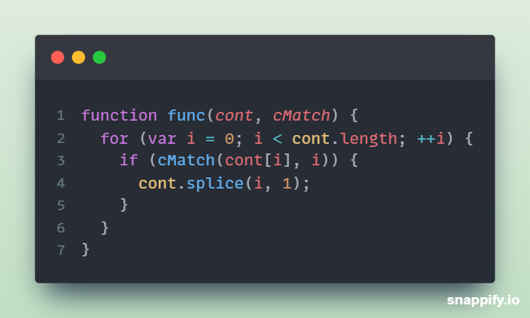
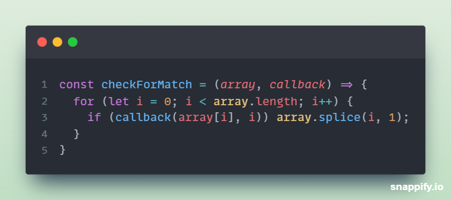

Given:
What is func trying to accomplish? Are there any problems with the function?
func is a function, declared via standard function declaration, that accepts 2 paramaters: an array, and a callback function.
The callback function's purpose is to check if 2 values match - given the invocation of the callback function in the for loop with it's 2 arguments: (cont[i], which represents the current value, and i, which represents the current index.
The purpose of this func function is to loop through an array, and for each value, invoke the callback function and check to see whether or not the current value matches with the current index; if this is true, remove that value from the array, otherwise, do nothing.
The main issue with this function is that the values can be skipped. For example, if we pass in an array of [0, 1, 2, 3], on the first iteration, our conditional will return true because i (0) is equal to the current value (0). We remove that item from the array, now the array looks like [1, 2, 3], but i increments to 1 now, which means the current value we're looking at would be 2. We don't even look at 1, which means it doesn't get evaluated, which defeats the purpose of this function: to check EACH value and see if it matches the current index.
I would refactor the above code snippet to the following:
